Installation Guide for Unravel VM
Page:Step 1: Install Unravel Server for Azure HDinsight Cluster
Page:Step 2: Use Script Action to configure HDinsight cluster for Unravel
Page:Step 3: Create Unravel VM using ARM template
Page:Step 4: ARM template for Spark2 HDinsight cluster with Unravel Script Actions
Page:Step 5: ARM Template for Kafka Cluster with Unravel Script Actions
Page:Step 6: Updating Unravel Installation
Step 1: Install Unravel Server for Azure HDinsight Cluster
This topic explains how to deploy Unravel Server 4.2.X on Azure HDInsight Cluster.
Workflow Summary
Setup Unravel VM .
Install the Unravel Server RPM on the VM.
Start Unravel daemons
Log into Unravel Web UI
Azure HDinsight 3.3 - 3.6
Hadoop 1.x - 2.x
Kerberos (Windows AD)
Hive 1.2
Spark 1.6, 2.0, 2.1
Operating System: RedHat/Centos 6.4 - 7.3
libaio.x86_64 installed
SELINUX=permissiveshould be set in/etc/selinux/configHDFS+Hive+YARN client/gateway, hadoop and hive commands in
PATHOpen signup or LDAP for Unravel Web UI user authentication
Architecture: x86_64
Cores: 8
RAM: 64GB minimum
OS Disk:
/with 2.5GB free minimumData Disk:
/srvwith 500GB free minimum
Port 3000 (or 4020) for Unravel Web UI access
UDP and TCP ports 4041-4043 open from Hadoop cluster to Unravel Server(s)
HDFS ports open from Hadoop cluster to Unravel Server(s)
Hive MetaStore DB port open to Unravel Server(s) for partition reporting
For Oozie, port 11000 open to Unravel Server(s)
Note
HIGHLIGHTED text and text with brackets ( { } ), unless otherwise noted, indicates where you must substitute your particular values for the text.
UNRAVEL_HOST_IP must be a fully qualified DNS or the IP address.
Note
Setup Unravel VM on the same VNET and subnet of the target HDInsight cluster
VM size: Standard_E8s_v3
OS: centos7.3 or RHEL 7.4
image Publisher: OpenLogic
Setup the VM on the same VNET and Subnet of the HDInsight cluster
Start
ntpdand check whether time is accurate.Security Group
Unravel Server works with multiple HDInsight clusters, including existing clusters and new clusters. A TCP and UDP connection is needed from the head node of each HDInsight cluster to Unravel Server.
Add inbound security policy allow ssh and 443 access to the unravel node.
The default security policy already allow all access within the VNET. Default rule start with 6500.
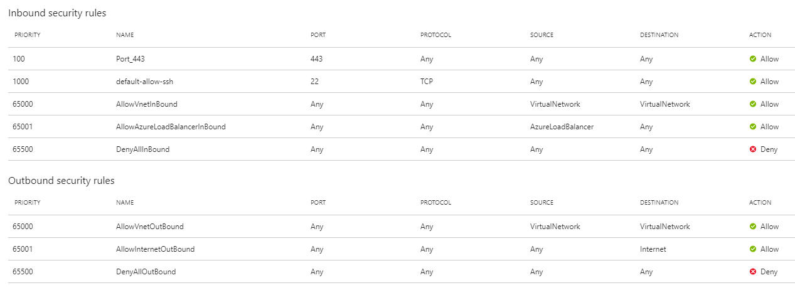
Disable
selinux.# sudo setenforce Permissive
Edit the file to make sure the setting persists after reboot, be sure
SELINUX=permissive.# vi /etc/selinux/config
Install
libaio.x86_64.# sudo yum -y install libaio.x86_64
Install
lzop.# sudo yum install lzop.x86_64
Disable the local Firewall.
# sudo systemctl disable firewalld # sudo systemctl stop firewalld # sudo iptables -F # sudo iptables -L
Note
The precise RPM filename will vary. The version has the structure
x.y.b
where
b
is a build number that is imposed as an RPM epoch which means it takes precedence over version numbers for determining what is more up-to-date. The Unravel build numbers always increase and are allocated so that they respect the ordering of
x.y
versioning.
Note
Replace the asterisks as needed to be more selective.
Download the RPM from the Unravel distribution server to the Unravel VM
See instructions UPDATE_NEEDED_ADD LINK TO RPM.
# sudo rpm -U unravel-4.2.7-Azure-latest.rpm
The installation creates /usr/local/unravel/ which contains the executables, scripts, and settings. User unravel is created. The initial internal database and other durable state are put in /srv/unravel/ for larger storage. By default, the installation supports YARN.
The master configuration file is in /usr/local/unravel/etc/unravel.properties and the logs are in /usr/local/unravel/logs/. The RPM installation creates user unravel if it does not already exist; /etc/init.d/unravel_* scripts for controlling its services, as well as /etc/init.d/unravel_all.sh which can be used to manually stop, start, and get status of all daemons in proper order.
During initial install, a bundled database is used. This can be switched to use an externally managed MySQL for production. (The bundled database root mysql password is stored in /root/unravel.install.include during installation.)
By Default Public IP should be assigned to the Unravel VM node.
Create a security policy that allows
sshand 443 to the Unravel VM node.Use of either
sshkeyorpassworddepends on the VM setup tosshto the Unravel node.
Restriction
Do not make Unravel Server UI accessible on the public Internet because doing so would violate your licensing terms.
The Unravel Server's configuration directory is located at /usr/local/unravel/etc on Unravel Server. It is required to modify the unravel.ext.sh file as shown below. You can modify unravel.properties to enable certain features. After making these changes a restart of Unravel Server daemons will be required, as detailed below.
Note
Replace somefile.pem with the correct filename.
# ssh -i {somefile.pem} sshuser@$UNRAVEL_IP# cd /usr/local/unravel/etc # sudo chown unravel:unravel *.properties # sudo chmod 644 *.properties
# echo " export CDH_CPATH=/usr/local/unravel/dlib/hdp2.6.x/* \ " >> /usr/local/unravel/etc/unravel.ext.sh
Note
The settings file /usr/local/unravel/etc/unravel.properties is created during initial install and subsequent RPM upgrades will not change it because your site-specific properties are put into this file.
Open
/usr/local/unravel/etc/unravel.propertiesusingvi.# sudo vi /usr/local/unravel/etc/unravel.properties
Adjust other values in
unravel.propertiesusing the guidelines and descriptions in the table below.
|
Property |
Description |
Required by HDinsight cluster |
Example Values |
|---|---|---|---|
|
|
Defines the Unravel Server URL for HTTP traffic. |
|
|
|
|
Identifies your installation for reporting purposes. |
|
|
|
|
Location where Unravel's temp file will reside |
|
|
|
|
Sets retention for search data. |
|
|
|
|
Unravel UI admin |
|
|
|
|
Optional for Spark when HDinsight using blob storage storage account name for the HDinsight cluster |
using blobstorage |
|
|
|
Primary storage account key |
using blobstorage |
Ondaq2aYMpJf8pCdvtFJ/zARJLhFr4Vf94PPJvMP1EsoFzBKp |
|
|
Optional for Spark when HDinsight using blob storage Storage account name for the HDinsight cluster (same as |
using blobstorage |
|
|
|
Secondary storage account key |
using blobstorage |
aL3MFZ/5hP4k0LxA+tn5/NM6EkM1AZkFZzKmWjgEMqe0o6F |
|
|
The data lake fully qualified domain name, e.g., mydatalake.azuredatalakestore.net |
using Data Lakestorage |
|
|
|
An application ID. An application registration has to be created in the Azure Active Directory |
using Data Lake storage |
5d19877f-3eb5-413a-9a41-7ae8a0048cfk |
|
|
An application access key which can be created after registering an application |
using Data Lake storage |
6FMzo61+cKIRPFZRxzUxiLSuWc5YEsdZzYbtU5rMyUg= |
|
|
The OAUTH 2.0 Access Token Endpoint. It is obtained from the application registration tab on Azure portal |
using Data Lake storage |
https://login.microsoftonline.com/bc745a0d-f282-4e99-b95f-1ecb477a209g/oauth2/token |
|
|
It is the path in the Data lake store where the target cluster has been given access. |
using Data Lake storage |
/clusters/CLUSTERNAME |
|
|
Name of kafka cluster. The display name show on the Unravel UI to define kafka cluster. Other Unravel kafka properties depends on this name |
kafka |
udkafka |
|
|
Kafka cluster bootstrap server and port (usually are two worker nodes) |
kafka |
wn0-UDKAFK:9092,wn1-UDKAFK:9092 |
|
|
Define kafka cluster broker servers names |
kafka |
broker-1,broker-2,broker-3 |
|
|
Define |
kafka |
wn0-UDKAFK |
|
|
Define |
kafka |
9999 |
|
|
Define |
kafka |
wn1-UDKAFK |
|
|
Define |
kafka |
9999 |
|
|
Define |
kafka |
wn2-UDKAFK |
|
|
Define |
kafka |
9999 |
Please find and append the following properties in the
/usr/local/unravel/etc/unravel.propertiesfile when using unravel to monitor HDinsight cluster that using blob storagecom.unraveldata.hdinsight.storage-account-name-1=fs.azure.account.key.unravelstorage03.blob.core.windows.net com.unraveldata.hdinsight.primary-access-key=Ondaq2aYMpJf8pCdvtFJ/zAR1LhFr4Vf94PPJvMP1DsoFzBKp//4DVQi+hcL5+XsW2XFNI7p com.unraveldata.hdinsight.storage-account-name-2=fs.azure.account.key.unravelstorage03.blob.core.windows.net com.unraveldata.hdinsight.secondary-access-key=aL3MFZ/5hP4k0LxA+tn5/NM6EkM1AZkFZzCmWjgEMqe0o6F33gJZxwfQABLaynxpatWY71
Note
You will need to update the above blob
Storage account name and access keyfrom your environment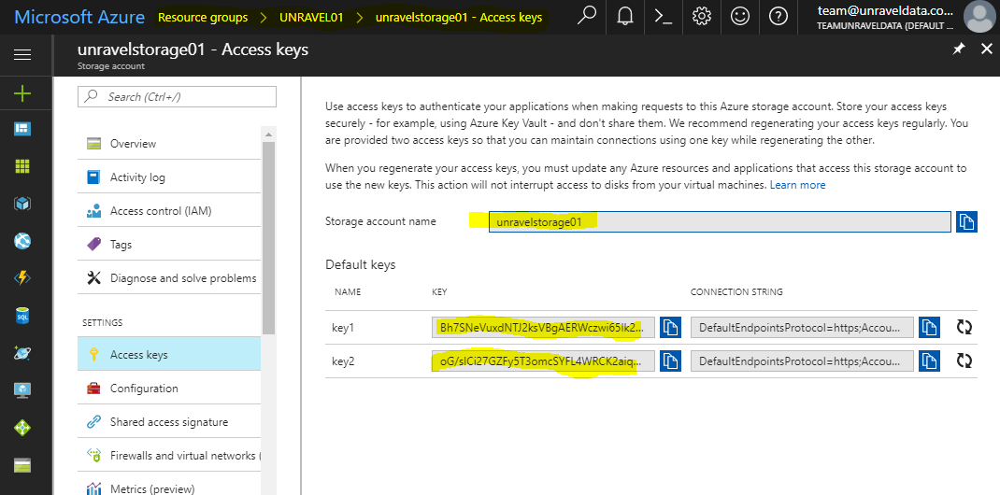
Please find and append the following properties in the
/usr/local/unravel/etc/unravel.propertiesfile when using the unravel to monitor HDinsight cluster using Data Lake storage.com.unraveldata.adl.accountFQDN=datalake0001.azuredatalakestore.net com.unraveldata.adl.clientId=5d19877f-3eb5-413k-9a41-7ae8a0048cfa com.unraveldata.adl.clientKey=5FMzo61+cKIRPFZRxzUxiLSuWc5YEsdZzYbtU5r com.unraveldata.adl.accessTokenEndpoint=https://login.microsoftonline.com/bc745a0d-f282-4e99-b95f-1ecb477a209e/oauth2/token com.unraveldata.adl.clientRootPath=/clusters/{CLUSTERNAME}Note
You will need to update the above data like
account name, clientId, clientKey, accessTokenEndpoint and clientRootPathfrom your environmentFind the Data Lake storage account from HDinsight cluster | Properties on Azure portal.
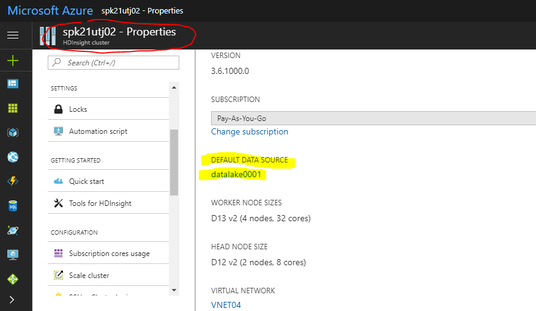 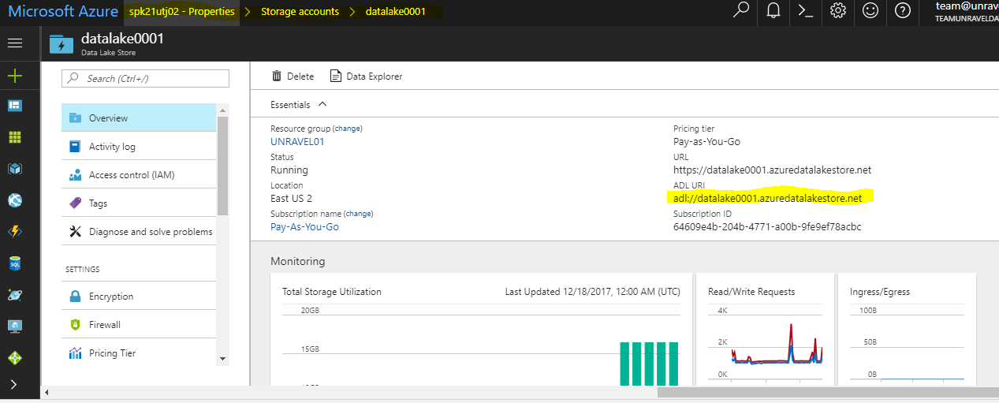
Find the Data Late
clientRootPathfrom Azure portal.HDinsight cluster | Properties | Storage Accounts → click Data Lake account.
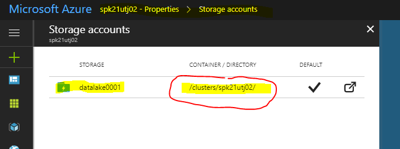
Find the user (Azure principal) that has access to the Data Lake storage path or folder from Azure portal.
HDinsight cluster | Properties | Storage Accounts → click Data Lake account→ click Data Explorer → select the folder that is used by HDinsight cluster → click Access.
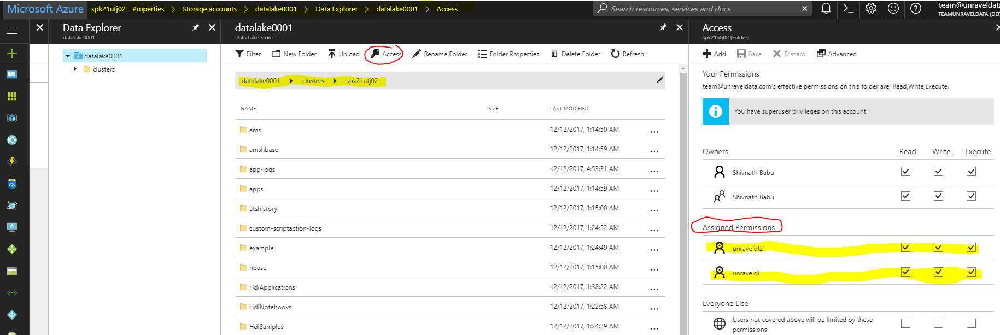
Finding the
clientId, clientKey, and accessTokenEndpointfrom Azure Portal.On Azure portal → click Azure Active Directory | App Registrations → look for the account principal found previously.
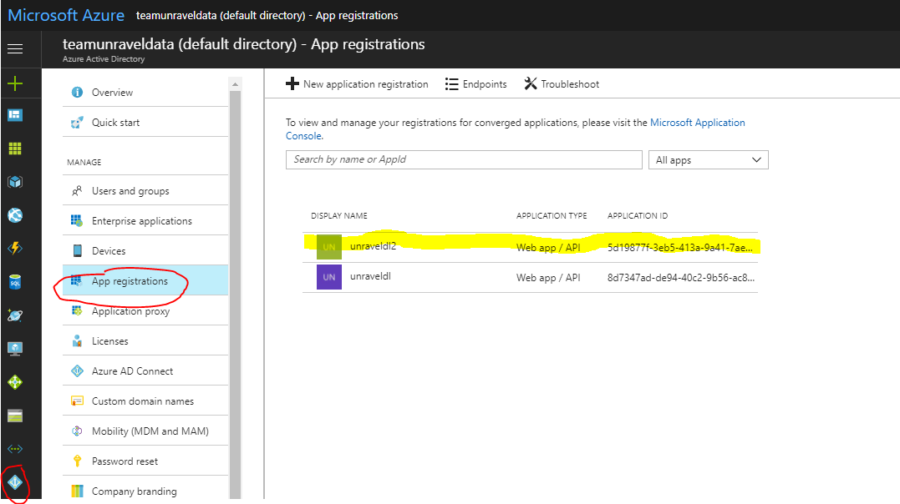 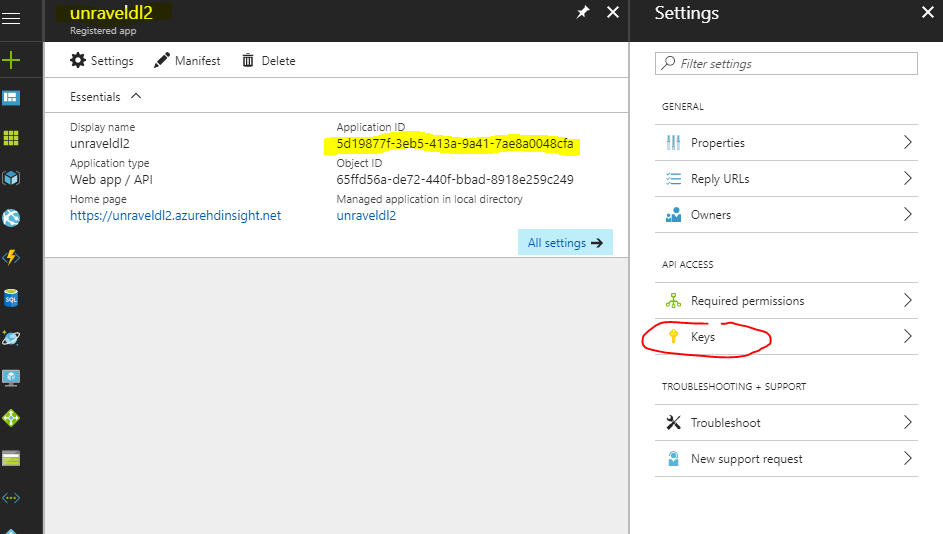
Click the account principal and look for the Application ID and that is the client ID.
Click the Keys, and enter the
key namein description and set anexpiration date; theclientkeyis displayed once click on SAVE. Its only displayed once!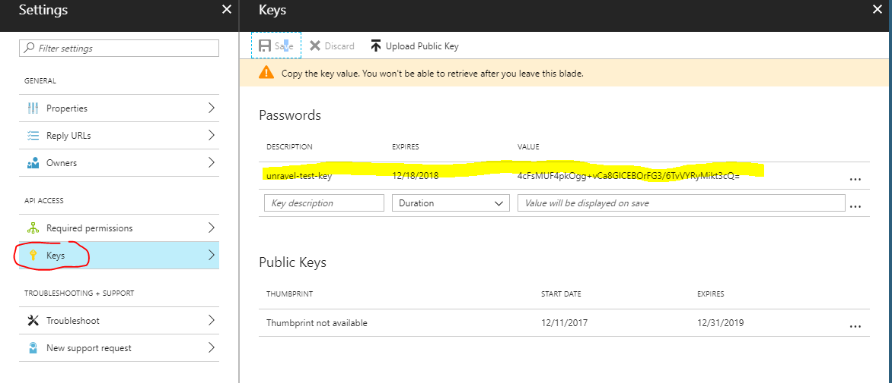
Go back to App Registration screen and click Endpoints; and look for the
OAUTH 2.0 TOKEN ENDPOINT.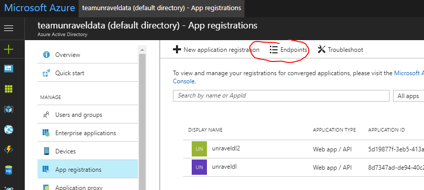 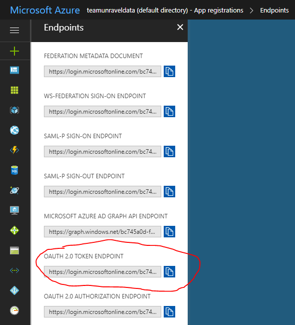
After edits to com.unraveldata.login.admins in /usr/local/unravel/etc/unravel.properties it is necessary to restart Unravel Server for changes to take effect. The echo command shows the page to visit with your browser. If you are using an SSH tunnel or HTTP proxy, you might need to make adjustments to the host/IP of the URL:
# sudo /etc/init.d/unravel_all.sh start
# sleep 60
# echo "http://({UNRAVEL_HOST_IP} -f):3000/"4. Log into Unravel Web UI.
Create a SSH tunnel to access the Azure VM for unravel's port 3000.
# ssh -i somefile.pem sshuser@${UNRAVEL_HOST_IP} -L 3000:127.0.0.1:3000Using a web browser, navigate to http://127.0.0.1:3000 and login as user "admin" with password "unraveldata".
Note
For the free trial version, use the Chrome web browser.
 |
Unravel Web UI Login Screen
Congratulations!
Unravel Server is up and running. Please proceed to Step2 to configure HDinsight cluster for Unravel.
For instructions on using Unravel Web UI, see the User Guide.
Step 2: Use Script Action to configure HDinsight cluster for Unravel
Unravel script action requires Internet Access to download the script action script and other packages.
For secured HDInsight cluster without public Internet access, download the following files into your private blob store that are accessible by your secure HDInsight cluster.
http://central.maven.org/maven2/org/anarres/lzo/lzo-core/1.0.5/lzo-core-1.0.5.jar (optional, default is not needed)
You use the Azure Portal to create a Spark 2.1 HDInsight Cluster.
In Summary Confirm configuration (Step 3), you have the option modify the number of worker nodes and size and select the correct VNET and Subnet associate to your HDInsight cluster. You can also specify the unravel bootstrap script to run during cluster creation.
 |
On the Advanced settings (Step 5). Features two options, the ability to define Script Actions and set you Virtual Network Settings.
Note
When entering Virtual Network settings you must enter the VNET and Subnet where Unravel VM is located.
| 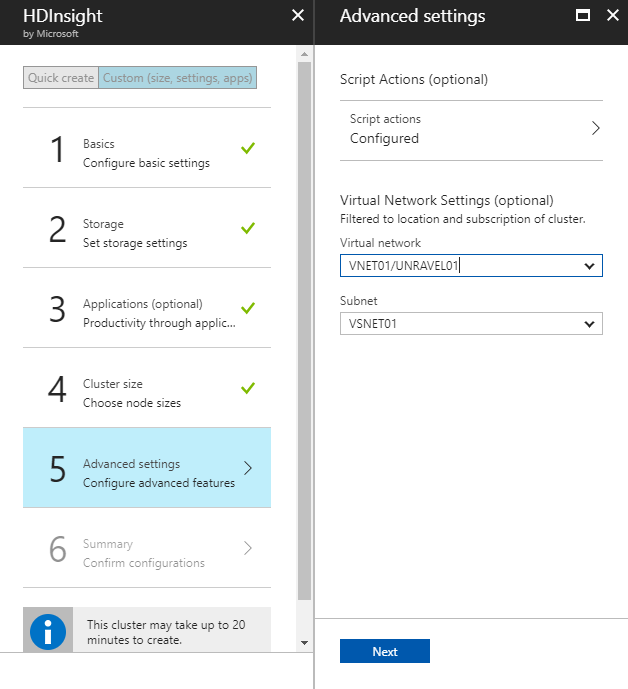 |
On the Advanced setting screen click on the arrow to the right of script actions to bring up the Submit script action screen:
Select Script type "- Custom" and enter a Name e.g. "Unravelscript003" ← just a name for this object.
The Bash script URI uses the github URL https://raw.githubusercontent.com/unravel-data/public/master/hdi/hdinsight-unravel-spark-script-action/unravel_hdi_spark_bootstrap_3.0.sh
Note
The Unravel script for Script Action is located on the Unravel VM /usr/local/unravel/webapps/ROOT/hh/unraveldata-clients/unravel_hdi_bootstrap.sh
above instruction use github to store the Unravel script; and Azure script action script can also be uploaded to Azure blob storage with https URI
Check the boxes “Head”, “Worker” and "Edge" ; so this custom script action will apply on both Head and worker nodes.
In the parameter field enter the string " --unravel-server" follow by unravel node’s private IP address:port and spark or hive version ( see below); then clickCreate.
--unravel-server 10.10.1.10:3000 --spark-version 2.1.0
Azure portal will validate the script; if the script is validated you will be returned to you initial screen. validations it returns to the same screen and click Select.
| 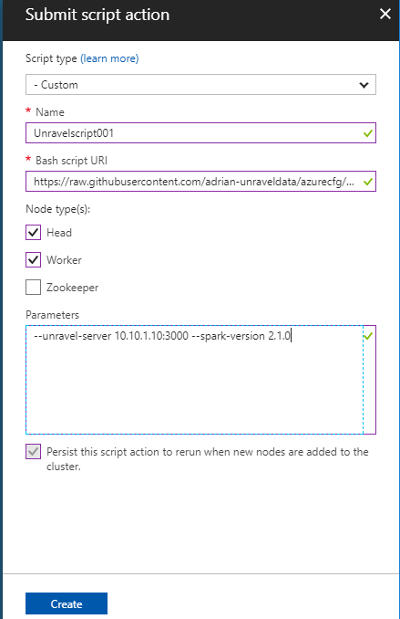 |
Now return back to Step 5 and Script Action is shown Configured; then clickNext
Note
Other supported script arguments are --spark-version and --hive-version accepting the X.Y.Z format of the system version - eg. --spark-version 2.1.0 --hive-version 1.2.0
Summary configuration is displayed on Step 6; click Create
The HDInsight cluster is shown on Azure dashboard with the status of Deploying. The Cluster creation process takes approximately 20-25 minutes.
Once the HDInsight cluster creation completed:
check the cluster information from Azure dashboard Find out the Ambari URL and ssh access to first head node. And inspect script action if running success or not.
Ambari URL = https://<Cluster_Name>.azurehdinsight.net
ssh access to first head node = ssh sshuser@<Cluster_Name>-ssh.azurehdinsight.net
Check Script Actions, by clicking the “Script actions” icon on the above window; and should be seeing the Script Action run “Succeeded”
| 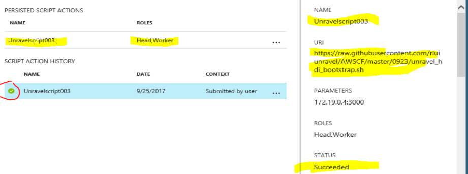 |
Login to Ambari UI and check the Ambari tasks; and there should be three main tasks and corresponding log files
Customscript Action task
Unravel call to stop Spark service
Unravel call to start Spark service
Script actions can be invoked after the cluster is up and running. In Azure portal of the cluster page select “Script actions”, “Submit new”. Enter the script action details.
After the settings have been entered, and the settings saved the action will be run on the cluster nodes.
Note
Unravel script action cannot be rerun. If you need to redeploy the Unravel script action, just submit a new script action script.
| 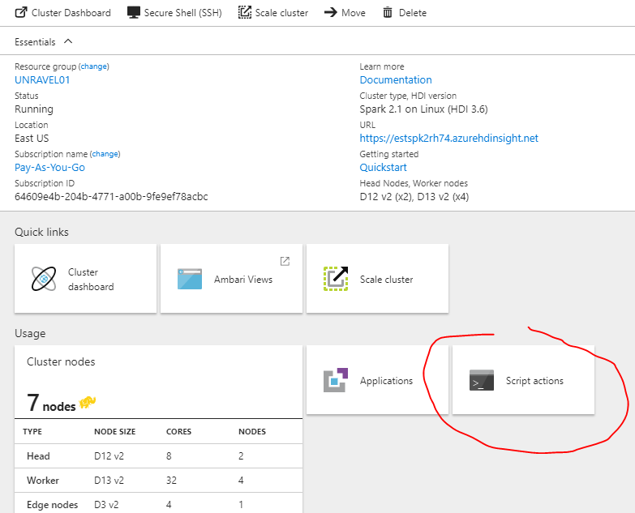 |
Choose Script type: "- Custom"
Name: Enter a name for this script
Bash script URI: https://raw.githubusercontent.com/unravel-data/public/master/hdi/hdinsight-unravel-spark-script-action/unravel_hdi_spark_bootstrap_3.0.sh
Note
If your HDInsight cluster has no public internet access please download the above script action script and upload to the blob storage that the HDInsight cluster has access to it.
Node type: For Spark, and Hadoop HDInsight cluster, check "Head", "Worker" and "Edge" node if you have configured with edge node. For Kafka HDInsight cluster, the script action only applies to "Head" node.
Script action also been applied to HDInsight cluster using Azure 1.0 command line, the following is an example of using Azure 1.0 CLI to run unravel script action on a HDInsight Spark cluster
Tip
Install Azure 1.0 CLI use docker container is the quickest way described in this Azure online doc
azure hdinsight script-action create estspk2rh74 -g UNRAVEL01 -n unravel-script-action -u https://raw.githubusercontent.com/unravel-data/public/master/hdi/hdinsight-unravel-spark-script-action/unravel_hdi_spark_bootstrap_3.0_a.sh -p 'unravel-server 10.10.1.15:3000 --spark-version 2.1.0' -t "headnode;workernode;edgenode"
The command structure is below
azure hdinsight script-action create <CLUSTERNAME> -g <RESOURCEGROUP> -n <NAME> -u https://raw.githubusercontent.com/unravel-data/public/master/hdi/hdinsight-unravel-spark-script-action/unravel_hdi_spark_bootstrap_3.0_a.sh -p 'unravel-server UNRAVEL-IP:3000 --spark-version 2.1.0' -t "headnode;workernode;edgenode"
-g = Resource Group name
-n = Name of this script action task
-u = script path
-p = paramaters
-t = node types
Example screen capture is below
The result of running this script action script via Azure 1.0 command line can also be checked from Azure portal
| 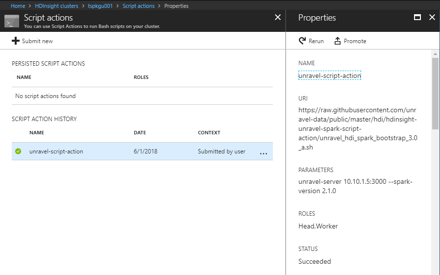 |
Submitting script action for Kafka cluster
azure hdinsight script-action create $CLUSTER_NAME -g $RESOURCE_GROUP -n $NAME_FOR_TASK -u $PATH_FOR_KAFKA_SCRIPT_ACTION -p '$UNRAVEL_VM_IP:3000' -t "headnode"
For no internet access script action for kafka cluster please see this page under the section "Using Script Actions with No Internet access cluster"
Example of screen capture shown below
| 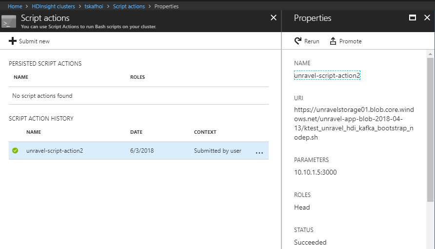 |
Step 3: Create Unravel VM using ARM template
Unravel VM can be deployed using Azure Resource Manager (ARM) template. This can automate the Unravel VM node setup; however the ARM template needs to be updated to reflect your specific environment.
The following ARM templates and parameter JSON file are for reference only. You need to update or create your own template files.
This example template creates an Azure "standard E8s V3" VM in the existing VNET and subnet, and it adds a data disk on the VM for "/srv " mount point.
Note
You need to update VNET, subnetRef, vmName, adminPassword before running the ARM template to create VM.
You can change data disk size; it is currently set to 500G. If you change the disk size, update unravel-setup.sh script (search for 500).
For Centos 7.3 Unravel VM
ARM Template | |
|---|---|
Parameter file |
For Redhat 7.4 Unravel VM
ARM Template | |
|---|---|
Parameter file |
Note
The parameter files have to be modified to fit your Azure environment; you have to fill in the blob storage account, access keys or ADLS account information. See here on how to located Unravel properties in Azure.
To download and install the Unravel RPM, you must download the ARM template which is embedded in the Azure Extension script. You can obtain the extension script here:
Extension Script for CentOS 7.3 | |
|---|---|
Extension Script for CentOS 7.4 |
Note
The custom extension script fixes most of the basic unravel configuration; however, you must manually edit /usr/local/unravel/etc/unravel.properties file to set the correct values for your blob storage account or data lake store access information.
See Step 1 regarding editing unravel.properties and here on how to located Unravel properties in Azure.
Tip
If Unravel VM is deploying in a closed environment, download the unravel rpm file from UPDATE_NEEDED_ADD LINK TO RPM.4.2.7. and save it in your private blob store that is accessible by your Azure resources. Also download the unravel-setup.sh script and update the unravel rpm download path for your private blob store.
Below is the content of this extension script
# Download unravel rpm
/usr/bin/wget http://preview.unraveldata.com/unravel/RPM/4.2.7/Azure/unravel-4.2.7-Azure-latest.rpm
BLOBSTORACCT=${1}
BLOBPRIACKEY=${2}
BLOBSECACKEY=${3}
DLKSTOREACCT=${4}
DLKCLIENTAID=${5}
DLKCLIENTKEY=${6}
DLKCLITOKEPT=${7}
DLKCLIROPATH=${8}
# Prepare the VM for unravel rpm install
/usr/bin/yum install -y ntp
/usr/bin/yum install -y libaio
/usr/bin/yum install -y lzop
/usr/bin/systemctl enable ntpd
/usr/bin/systemctl start ntpd
/usr/bin/systemctl disable firewalld
/usr/bin/systemctl stop firewalld
/usr/sbin/iptables -F
/usr/sbin/setenforce 0
/usr/bin/sed -i 's/enforcing/disabled/g' /etc/selinux/config /etc/selinux/config
sleep 30
# Prepare disk for unravel
mkdir -p /srv
DATADISK=`/usr/bin/lsblk |grep 500G | awk '{print $1}'`
echo $DATADISK > /tmp/datadisk
echo "/dev/${DATADISK}1" > /tmp/dataprap
echo "Partitioning Disk ${DATADISK}"
echo -e "o\nn\np\n1\n\n\nw" | fdisk /dev/${DATADISK}
DATAPRAP=`cat /tmp/dataprap`
DDISK=`cat /tmp/datadisk`
/usr/sbin/mkfs -t ext4 ${DATAPRAP}
DISKUUID=`/usr/sbin/blkid |grep ext4 |grep $DDISK | awk '{ print $2}' |sed -e 's/"//g'`
echo "${DISKUUID} /srv ext4 defaults 0 0" >> /etc/fstab
/usr/bin/mount -a
# install unravel rpm
/usr/bin/rpm -U unravel-4.2.7-Azure-latest.rpm
/usr/bin/sleep 5
# Update Unravel Lic Key into the unravel.properties file
# Obtain a valid unravel Lic Key file ; the following is just non working one
echo "com.unraveldata.lic=1p6ed4s492012j5rb242rq3x3w702z1l455g501z2z4o2o4lo675555u3h" >> /usr/local/unravel/etc/unravel.properties
echo "export CDH_CPATH="/usr/local/unravel/dlib/hdp2.6.x/*"" >> /usr/local/unravel/etc/unravel.ext.sh
# Update Azure blob storage account credential in unravel.properties file
# Update and uncomment the following lines to reflect your Azure blob storage account name and keys
if [ $BLOBSTORACCT != "NONE" ] && [ $BLOBPRIACKEY != "NONE" ] && [ $BLOBSECACKEY != "NONE" ]; then
echo "blob storage account name is ${BLOBSTORACCT}"
echo "blob primary access key is ${BLOBPRIACKEY}"
echo "blob secondary access key is ${BLOBSECACKEY}"
echo "# Adding Blob Storage Account information, Update and uncomment following lines" >> /usr/local/unravel/etc/unravel.properties
echo "com.unraveldata.hdinsight.storage-account-name-1=fs.azure.account.key.${BLOBSTORACCT}.blob.core.windows.net" >> /usr/local/unravel/etc/unravel.properties
echo "com.unraveldata.hdinsight.primary-access-key=${BLOBPRIACKEY}" >> /usr/local/unravel/etc/unravel.properties
echo "com.unraveldata.hdinsight.storage-account-name-2=fs.azure.account.key.${BLOBSTORACCT}.blob.core.windows.net" >> /usr/local/unravel/etc/unravel.properties
echo "com.unraveldata.hdinsight.secondary-access-key=${BLOBSECACKEY}" >> /usr/local/unravel/etc/unravel.properties
else
echo "One or more of your blob storage account parameter is invalid, please check your parameter file"
fi
sleep 3
if [ $DLKSTOREACCT != "NONE" ] && [ $DLKCLIENTAID != "NONE" ] && [ $DLKCLIENTKEY != "NONE" ] && [ $DLKCLITOKEPT != "NONE" ] && [ $DLKCLIROPATH != "NONE" ]; then
echo "Data Lake store name is ${DLKSTOREACCT}"
echo "Data Lake Client ID is ${DLKCLIENTAID}"
echo "Data Lake Client Key is ${DLKCLIENTKEY}"
echo "Data Lake Access Token is ${DLKCLITOKEPT}"
echo "Data Lake Client Root Path is ${DLKCLIROPATH}"
echo "# Adding Data Lake Account information, Update and uncomment following lines" >> /usr/local/unravel/etc/unravel.properties
echo "com.unraveldata.adl.accountFQDN=${DLKSTOREACCT}.azuredatalakestore.net" >> /usr/local/unravel/etc/unravel.properties
echo "com.unraveldata.adl.clientId=${DLKCLIENTAID}" >> /usr/local/unravel/etc/unravel.properties
echo "com.unraveldata.adl.clientKey=${DLKCLIENTKEY}" >> /usr/local/unravel/etc/unravel.properties
echo "com.unraveldata.adl.accessTokenEndpoint=${DLKCLITOKEPT}" >> /usr/local/unravel/etc/unravel.properties
echo "com.unraveldata.adl.clientRootPath=${DLKCLIROPATH}" >> /usr/local/unravel/etc/unravel.properties
else
echo "One or more of your data lake storge parameter is invalid, please check your parameter file"
fi
# Adding unravel properties for Azure Cloud
echo "com.unraveldata.onprem=false" >> /usr/local/unravel/etc/unravel.properties
echo "com.unraveldata.spark.live.pipeline.enabled=true" >> /usr/local/unravel/etc/unravel.properties
echo "com.unraveldata.spark.appLoading.maxAttempts=10" >> /usr/local/unravel/etc/unravel.properties
echo "com.unraveldata.spark.appLoading.delayForRetry=4000" >> /usr/local/unravel/etc/unravel.properties
# Starting Unravel daemons
# uncomment below will start unravel daemon automatically but within unravel_all.sh start will have exit status=1.
# Thus we recommend login to unravel VM and run unravel_all.sh manually
# /etc/init.d/unravel_all.sh startDownload the ARM template and parameter JSON files into your configured Azure CLI workstation
Azure CLI to deploy Unravel VM using this template and parameters json file
# az group deployment create --name deploymentname --resource-group RESOURCEGROUPNAME --template-file azuredeploy.json --parameters azuredeploy.parameters.json
To Validate template before deployment
# az group deployment validate --resource-group RESOURCEGROUPNAME --template-file azuredeploy.json --parameters azuredeploy.parameters.json
Once unravel VM creation completed; ssh to the VM using your defined ssh user then manually start unravel daemons.
# /etc/init.d/unravel_all.sh start
Step 4: ARM template for Spark2 HDinsight cluster with Unravel Script Actions
This ARM template allows you to create a Linux-based Spark2 HDInsight cluster and a Spark edge node. This template will also run Unravel's Script Actions script to setup unravel sensors and configuration on header, worker and edge nodes.
This ARM template uses the existing VNET, Subnet and Storage Account on the same resource group. You will need to update those values in parameter, variables to reflect your Azure environment.
A Spark edge node is a Linux virtual machine with the same client tools installed and configured as in the headnodes. You can use Spark edge node for accessing the cluster, testing your client applications, and hosting your client applications.
Note
You will need to deploy unravel VM and update the script action parameters h--unravel-server UNRAVEL_IP:3000 --spark-version 2.1.0
You can change the VM size of header, worker and edge nodes; and currently they are all using VM size of "Standard_D3_v2"
|
ARM Template |
|
|---|---|
|
Parameter file |
|
|
Unravel Script Action URI |
Note
Unravel script action requires Internet Access to download the script action script and other packages. For secured HDInsight cluster without public Internet access. Please download the no dependency script below into your blob store that accessible by the HDInsight cluster.
Tip
After modify this template please validate it before applying and HDInsight cluster creation takes about 15 - 25 minutes
Download the ARM template and parameter JSON files into your configured Azure CLI workstation.
Validate template before deployment.
az group deployment validate --resource-group RESOURCEGROUPNAME --template-file azuredeploy.json --parameters azuredeploy.parameters.json
Use the Azure CLI to deploy Spark 2.1 cluster using this template and parameters JSON file
az group deployment create --name deploymentname --resource-group RESOURCEGROUPNAME --template-file azuredeploy.json --parameters azuredeploy.parameters.json
Optionally, if you already have an existing spark2 cluster, you can apply Unravel's spark2 script via Azure portal.
From Azure portal, click the resource of the target spark2 cluster under your resource group and click Script actions.
| 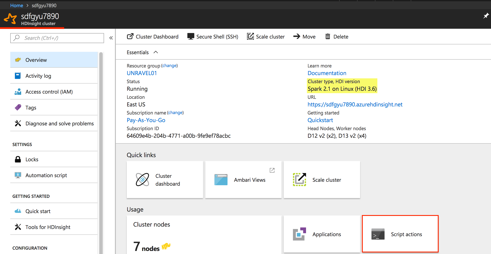 |
On script actions dialog box:
Click Submit new
Select script type "- Custom"
Enter a Name for this script e.g. "
unravel-spark-setup.Enter the script path from above e.g. https://raw.githubusercontent.com/unravel-data/public/master/hdi/hdinsight-unravel-spark-script-action/unravel_hdi_spark_bootstrap_3.0.shInput parameters: --unravel-server
UNRAVEL_VM_IP_address:3000 --spark-version 2.1.0Check the box Persist this script action to rerun ...
Click Create
| 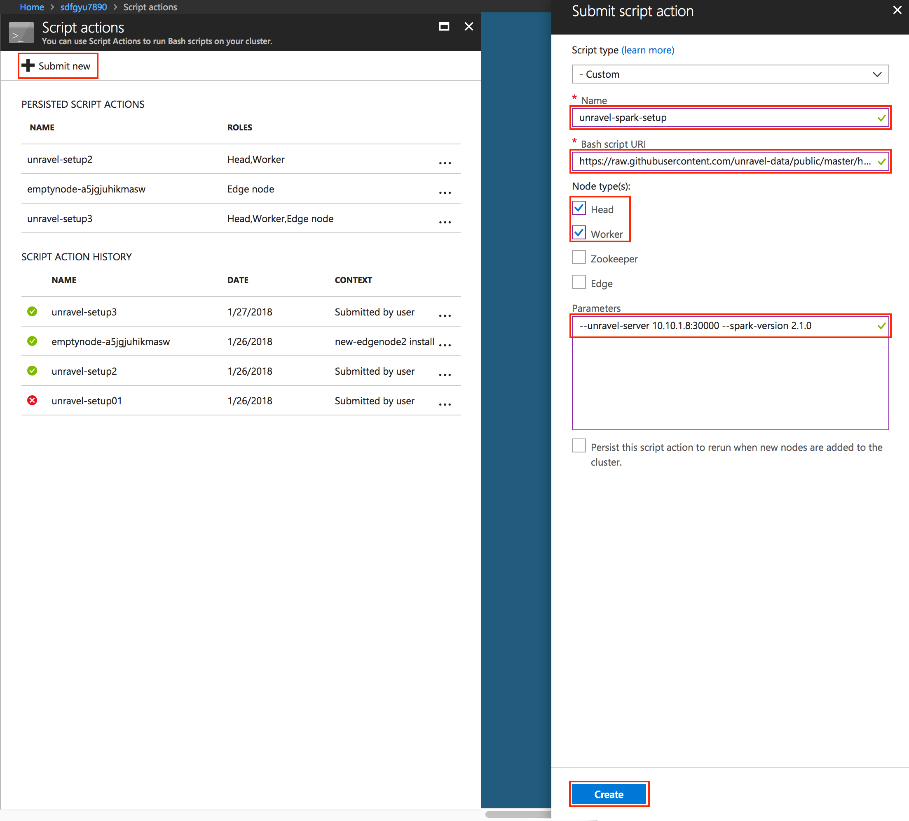 |
Tip
You can upload the unravel_hdi_bootstrap.sh script into the Azure blob storage and use the new URI path from your blob
Script Action will validate the script and then process it. Monitor the Azure portal until Scriptactions is completed. Then login to Ambari and check the Ambari task status.
Warning
The checkbox for "Persist this script action to rerun when new nodes are added .." will only affect new worker nodes when scale up the worker nodes. The Unravel script action script will not automaticallt apply because of checking this check box for newly added edge node from ARM template.
ARM template for install edge node with Unravel Script Action only
|
ARM Template |
|
|---|---|
|
Parameter file |
ARM template to install the edge node with your custom Install Script Action script and Unravel Script Action (two scripts are run in this example)
In this example, an edge node will be created first. Next, it runs emptynode-setup.sh, followed by Unravel's Action script: unravel_hdi_bootstrap.sh
|
ARM Template |
|
|---|---|
|
Parameter file |
Note
Use of the above ARM template for edge node requires change in scriptActionUri path and application name in variables and also parameters for cluster name. Please adjust the ARM templates for your setup and validate it before using.
Step 5: ARM Template for Kafka Cluster with Unravel Script Actions
Note
Unravel script action requires Internet Access to download the script action script and other packages. For secured HDInsight cluster without public Internet access, see No Internet access cluster below.
This ARM template allows you to create a Linux-based Kafka cluster with Unravel setup on predefined Unravel VM. It runs Unravel's Script Actions script to detect the Kafka cluster bootstrap servers and jmx broker nodes; and update this information into the unravel.properties file reside on Unravel VM.
The Unravel script actions script for Kafka is specifically for Kafka cluster and is needed to run on header node only.
This ARM template uses an existing VNET, Subnet and Storage Account on the same resource group. The worker nodes in this Kafka cluster uses two data disks per node.
You will need to update those values (VNET, Subnet, Storage Account, Cluster name, ...etc ) in parameter, variables to reflect your Azure environment.
Note
You need to deploy unravel VM and update the script action parameters UNRAVEL_IP:3000
You can change the VM size of header, worker nodes; currently they are all using VM size of "Standard_D3_v2"
Tip
After modifying this template please validate it before applying. The HDInsight cluster creation takes about 15 - 25 minutes
Download the ARM template and parameter JSON files into your configured Azure CLI workstation.
To Validate template before deployment
az group deployment validate --resource-group RESOURCEGROUPNAME --template-file azuredeploy.json --parameters azuredeploy.parameters.json
Use the Azure CLI to deploy Kafka cluster using the template and parameters JSON file.
az group deployment create --name deploymentname --resource-group RESOURCEGROUPNAME --template-file azuredeploy.json --parameters azuredeploy.parameters.json
After the Kafka cluster is successfully created, the unravel script actions script should apply the Kafka configuration on Unravel's VM /user/local/unravel/etc/unravel.properties.
The following is the sample of lines appended to unravel.properties file
com.unraveldata.ext.kafka.clusters=seuguiko98003 com.unraveldata.ext.kafka.seuguiko98003.bootstrap_servers=wn0-seugui:9092,wn1-seugui:9092 com.unraveldata.ext.kafka.seuguiko98003.jmx_servers=broker1,broker2 com.unraveldata.ext.kafka.seuguiko98003.jmx.broker1.host=wn0-seugui com.unraveldata.ext.kafka.seuguiko98003.jmx.broker1.port=9999 com.unraveldata.ext.kafka.seuguiko98003.jmx.broker2.host=wn1-seugui com.unraveldata.ext.kafka.seuguiko98003.jmx.broker2.port=9999
Tip
And once unravel.properties file is updated; the only thing need to manually done on Unravel VM is to restart unravel_km
/etc/init.d/unravel_km restart
Optionally, if you already have an existing kafka cluster, you can apply Unravel's kafka script via Azure portal.
From Azure portal, click the resource of the target Kafka cluster under your resource group and click "Script actions"
| 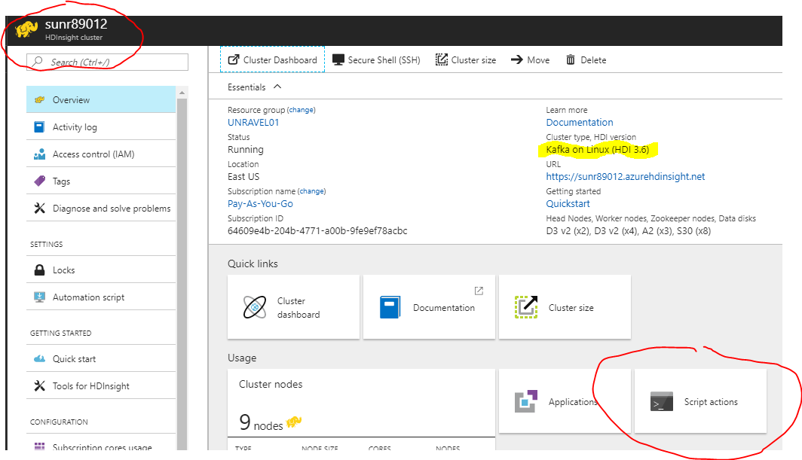 |
On script actions windows:
Click Submit new
Select script type, e.g., "- Custom"
Enter a Name for this script e.g. "unravel-kafka-setup"
Enter the script path from above e.g. https://raw.githubusercontent.com/unravel-data/public/master/hdi/hdinsight-unravel-kafka-script-action/unravel_hdi_kafka_bootstrap.sh
Input parameters: UNRAVEL_VM_IP_address:3000
Check the box "Persist this script action to rerun ..."
| 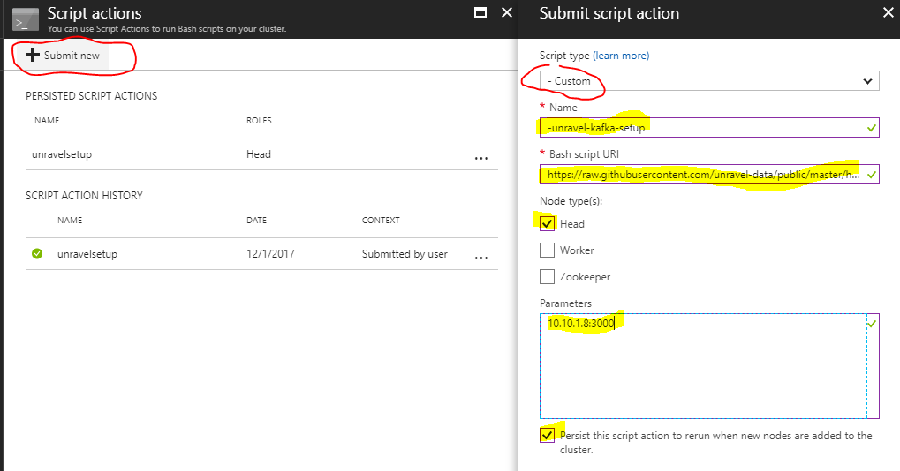 |
Tip
you can upload the unravel_hdi_kafka_bootstrap.sh script into the Azure blob storage and use the new URI path from your blob
Script Action will validate the script and then process it. Monitor the Azure portal Script until it completes. Then login to Ambari of the cluster and check the Ambari task status.
Login to unravel VM and restart the unravel Kafka monitor daemon, unravel_km.
/etc/init.d/unravel_km restart
For Kafka cluster script actions, it requires to get the jq package from azure content at ubuntu.com; and HDInsighUtilities script from Azure
So for secured kafka cluster, you can access to a public VM (ubuntu) and do
# apt-get install -d jq
It will download the package of jq and dependency packages libonig2 on /var/cashe/apt/archives folder, e.g., jq_1.5+dfsg-1_amd64.deb, libonig2_5.9.6-1_amd64.deb
tar the above deb files and scp to the headnodes (hn0 and hn1) and extract it
you can also get this jq and libonig2 deb files from unravel public blob store, you need to download it to your workstation then upload to hn0 and hn1
https://unravelstorage01.blob.core.windows.net/unravel-app-blob-2018-04-13/jq_and_libonig2.tar
Extract the jq and libonig2 files on the /tmp folder of hn0 and hn1
# cd /tmp/ # tar -xvf jq_and_libonig2.tar # sudo dpkg -i libonig2_5.9.6-1_amd64.deb jq_1.5+dfsg-1_amd64.deb
Download the new kafka script actions script using the github path below. Save it on your private blob store that is accessible by your private HDInsight clusters.
https://raw.githubusercontent.com/unravel-data/public/master/hdi/hdinsight-unravel-kafka-script-action/unravel_hdi_kafka_bootstrap_nodep.sh
The above kafka script action script is only good when you have done jq manually.
Submit the script actions for kafka cluster and observe the ambari task progress.
Optional step: For running script actions without manual install jq on headnode.
Edit the downloaded unravel_hdo_kafka_bootstrap_nodep.sh. Look for the following section, and update the http
###################################################################################################### # # # Get the jq from your own blob content # # You need to download and jq and libonig2 deb packages from # # https://unravelstorage01.blob.core.windows.net/unravel-app-blob-2018-04-13/jq_and_libonig2.tar # # update and uncomment the following lines of script for jq install from your blob store # # # ###################################################################################################### # # wget https://<BLOBSTORE_ACCOUNT>.blob.core.windows.net/<BLOBSTORE_NAME>/jq_and_libonig2.tar -O /tmp/jq_and_libonig2.tar # tar -xvf /tmp/jq_and_libonig2.tar -C /tmp # sudo dpkg -i /tmp/libonig2_5.9.6-1_amd64.deb # sudo dpkg -i /tmp/jq_1.5+dfsg-1_amd64.deb # ####################################################################################################### # # # End of installing jq, uncomment above for jq installation from blob store # # # #######################################################################################################
Uncomment and update the the https path for your jq_and_libonig2.tar file that correspond to your blob store and storage account (update the line bleow)
wget https://<BLOBSTORE_ACCOUNT>.blob.core.windows.net/<BLOBSTORE_NAME>/jq_and_libonig2.tar -O /tmp/jq_and_libonig2.tar
Uncomment the four lines below:
wget https://<BLOBSTORE_ACCOUNT>.blob.core.windows.net/<BLOBSTORE_NAME>/jq_and_libonig2.tar -O /tmp/jq_and_libonig2.tar tar -xvf /tmp/jq_and_libonig2.tar -C /tmp sudo dpkg -i /tmp/libonig2_5.9.6-1_amd64.deb sudo dpkg -i /tmp/jq_1.5+dfsg-1_amd64.deb
You can now submit script actions without manual install jq on the headnode. You must ensure jq_and_libonig2.tar is present on your private blob store.
Script action can be submitted from Azure portal or using Azure Command Line 1.0. See below example.
Submitting script action for kafka cluster
azure hdinsight script-action create $CLUSTER_NAME -g $RESOURCE_GROUP -n $NAME_FOR_TASK -u $PATH_FOR_KAFKA_SCRIPT_ACTION -p '$UNRAVEL_VM_IP:3000' -t "headnode"
-g = Resource Group name
-n = Name of this script action task
-u = script path
-p = parameters
-t = node types
Example of screen capture shown below
You can follow the Azure documentation to uses example Kafka Streams API and run against the unravel monitored kafka cluster. Or following the brief instruction below to verify your unravel kafka setup on your HDInsight cluster.
Download this two jar files from unravel public blob into your HDInsight cluster
wget https://unravelstorage01.blob.core.windows.net/unravel-app-blob-2018-04-13/kafka-streaming-1.0-SNAPSHOT.jar wget https://unravelstorage01.blob.core.windows.net/unravel-app-blob-2018-04-13/kafka-producer-consumer-1.0-SNAPSHOT.jar
Ssh into your kafka cluster headnode and running the following commands to define the variables CLUSTERNAME, KAFKAZKHOSTS, KAFKABROKERS.
export CLUSTERNAME=<your_kafka_clustername>
export KAFKAZKHOSTS=`curl -sS -u admin:<ambari_password> -G https://$CLUSTERNAME.azurehdinsight.net/api/v1/clusters/$CLUSTERNAME/services/ZOOKEEPER/components/ZOOKEEPER_SERVER | jq -r '["\(.host_components[].HostRoles.host_name):2181"] | join(",")' | cut -d',' -f1,2`
export KAFKABROKERS=`curl -sS -u admin:<ambari_password> -G https://$CLUSTERNAME.azurehdinsight.net/api/v1/clusters/$CLUSTERNAME/services/KAFKA/components/KAFKA_BROKER | jq -r '["\(.host_components[].HostRoles.host_name):9092"] | join(",")' | cut -d',' -f1,2`Create the kafka topics by running the following commands on kafka headnode
/usr/hdp/current/kafka-broker/bin/kafka-topics.sh --create --replication-factor 3 --partitions 8 --topic test --zookeeper $KAFKAZKHOSTS /usr/hdp/current/kafka-broker/bin/kafka-topics.sh --create --replication-factor 3 --partitions 8 --topic wordcounts --zookeeper $KAFKAZKHOSTS /usr/hdp/current/kafka-broker/bin/kafka-topics.sh --create --replication-factor 3 --partitions 8 --topic RekeyedIntermediateTopic --zookeeper $KAFKAZKHOSTS /usr/hdp/current/kafka-broker/bin/kafka-topics.sh --create --replication-factor 3 --partitions 8 --topic wordcount-example-Counts-changelog --zookeeper $KAFKAZKHOSTS
Verify created kafka topics
/usr/hdp/current/kafka-broker/bin/kafka-topics.sh --list --zookeeper $KAFKAZKHOSTS
Start the streaming application as background
java -jar kafka-streaming-1.0-SNAPSHOT.jar $KAFKABROKERS $KAFKAZKHOSTS &
Send records to test topics
java -jar kafka-producer-consumer-1.0-SNAPSHOT.jar producer $KAFKABROKERS
at this moment observe the unravel UI → Operation page → Chart → Kafka; you should observe some metric data is being collected.
| 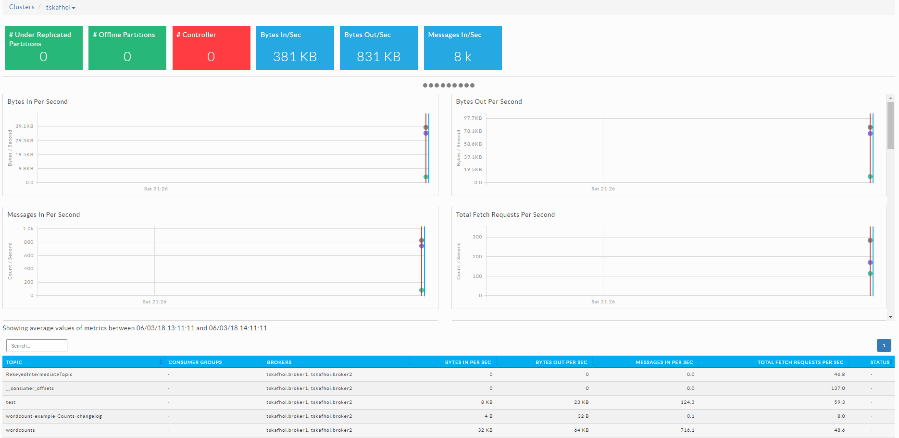 |
Once the producer completes, use this command to view information stored in wordcounts topic.
/usr/hdp/current/kafka-broker/bin/kafka-console-consumer.sh --bootstrap-server $KAFKABROKERS --topic wordcounts --formatter kafka.tools.DefaultMessageFormatter --property print.key=true --property key.deserializer=org.apache.kafka.common.serialization.StringDeserializer --property value.deserializer=org.apache.kafka.common.serialization.LongDeserializer --from-beginning
Kill this process or command after a while, then observe unravel UI again
| 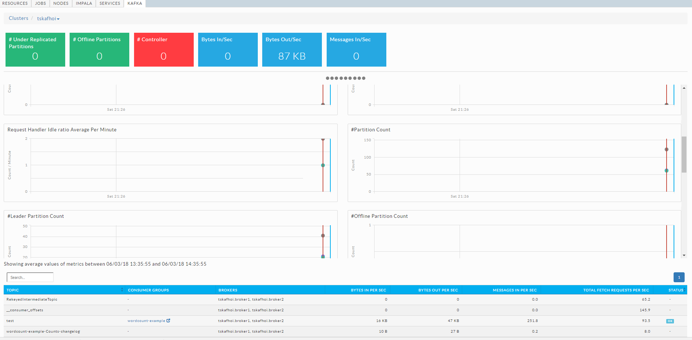 |
Step 6: Updating Unravel Installation
From time to time, Unravel Data will release new package with new features and improvement for customers to download and update their existing installations.
Updating Unravel VM on Azure is simple; just download the new unravel RPM package and install it.
Note
Text with brackets ( { } ) indicate where you must substitute your particular values for the text including the brackets.
# wget http://preview.unraveldata.com/img/{NEW-RPM-FILENAME.rpm}# rpm -U {NEW-RPM-FILENAME.rpm}Note
Update unravel installation should not affect the connected HDinsight cluster operation and can be done at any time. However some unravel rpm updates require the sensor upgrade and this will require you to re-submit the unravel script action script to head, worker, and edge nodes.